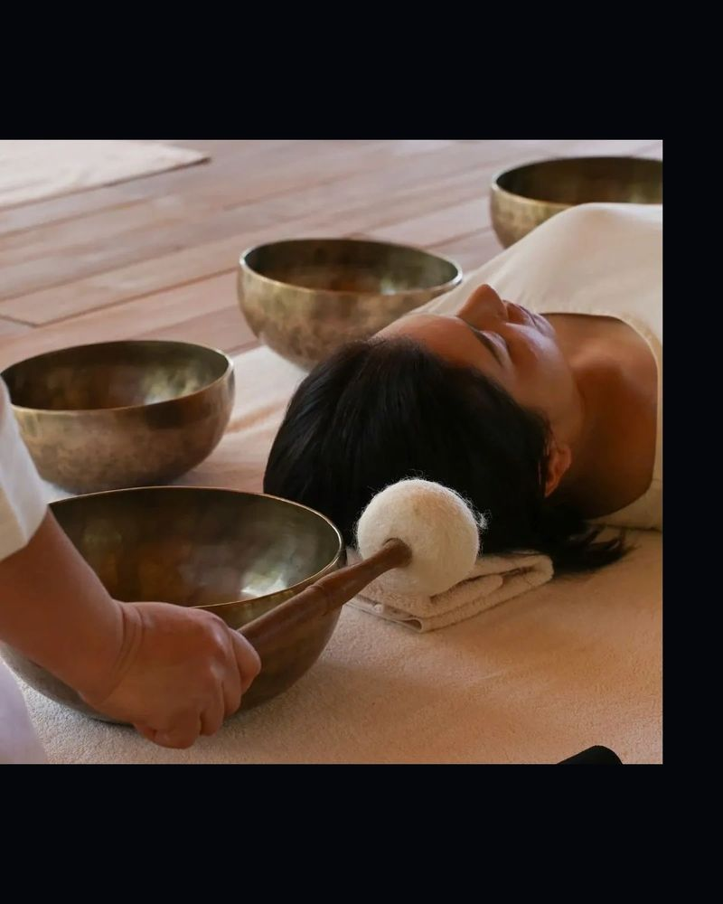
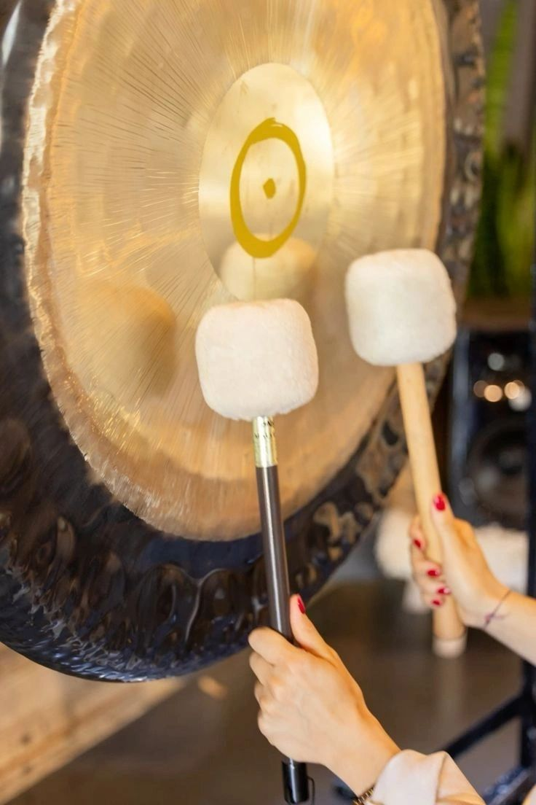

Regulation
The nervous system downshifts. Cortisol recedes, breath lengthens, and the body remembers a baseline it had forgotten beneath the noise.
A private sound sanctuary · Kand, Dharamshala
Bespoke sound healing in the Himalayas, arranged for one guest at a time. Gongs, quartz and hand-hammered brass — tuned to your nervous system, in a room built for nothing but resonance.
IThe practice
You make decisions that ripple through other people’s lives. Sound healing is the opposite of that pressure — a practice of receiving.
In a purpose-built acoustic room, therapeutic frequencies guide the nervous system out of vigilance and into a parasympathetic state — the physiology of deep rest, where clarity repairs itself. Nothing is asked of you here. No technique to learn, no effort to make. You lie down; the sound does the work.
नाद ब्रह्म · Nāda Brahma — the universe is sound
The nervous system downshifts. Cortisol recedes, breath lengthens, and the body remembers a baseline it had forgotten beneath the noise.
Vibration reaches what conversation cannot. Repetitive thought patterns loosen; what has been carried, finally settles.
Guests describe it as coming home — a return to signal beneath the static. Sleep deepens. Attention sharpens. Decisions simplify.
IIThe instrumentarium
Each session is composed, never repeated — instruments chosen for you alone. Hover a voice to meet it.Tap a voice to meet it.
Powerful waves of sound and pressure that move through the sternum and the room alike — an immersive, transformative weather.
Deep restorative rest · dissolves repetitive thought patterns · expanded consciousness
Pure, clear tones that resonate through the body and the energy field — light made audible.
Energetic balance & alignment · mental clarity · deep emotional healing
Rich, resonant tones with soothing vibrations — calming, grounding, and deeply meditative.
Calms the nervous system · reduces stress · grounding & inner stillness
Melodic, flowing tones that are uplifting and calming at once — evoking openness, wonder, and emotional connection.
Opens emotional awareness · inspires joy & creativity · heart-centred harmony
Steady, rhythmic beats that engage body and mind together — a vessel for inner exploration.
Connects with inner rhythm · empowerment & vitality · supports introspection
Small cymbal bells whose bright, clear tones sound beginnings, endings, and transitions.
Sharpens awareness · clears mental clutter · sacred mindful pauses
Delicate, shimmering cascades that signal transition and awaken awareness.
Clears mental fog · returns attention to the present · smooths energetic transitions
Exact frequencies applied near the body — subtle vibrations with quietly powerful effect.
Focused vibrational relaxation · enhanced concentration · internal balance
The gentle sound of falling rain — calm and a deep connection with nature.
Calm & serenity · enhanced visualisation · connection with nature
Smooth, resonant tones blending the qualities of bowl and bell — gentle, yet expansive.
Harmony & wholeness · gentle self-reflection · nurtures a peaceful atmosphere
Deep, earthy vibrations and a grounding, primal drone — the oldest wind instrument on earth.
Powerful grounding · body awareness & presence · deep natural breathing
IIIA private session
01
Tea in the garden. A quiet conversation about what you are carrying — physical, emotional, energetic — and what you want from the silence.
02
Your session is composed around you: instruments, frequencies and sequence chosen for your nervous system — a soundscore, not a playlist.
03
You lie down. The lights lower. Gongs and bowls move through the purpose-built room — vibration you feel in the chest, stillness you feel everywhere.
04
Silence, then tea. Guidance for carrying the state back into a loud world. Most guests arrange their return before they leave the garden.
IVSessions

Ancient grounding vibrations from hand-hammered bowls travel deep into the body — supporting stress release, emotional stillness, improved sleep, and a profound sense of inner stability. Ideal when life feels heavy or scattered.

A collective, deeply personal experience. Layered frequencies flow over and through you, allowing the mind to slow, the body to rest, and emotions to surface and release. Many experience deep peace, visions, and a sense of being held by sound.

Pure quartz creates luminous, high-frequency sound waves that work powerfully on the body — supporting chakra alignment, emotional clarity, mental calm, and an expansion of awareness.
Individuals & small groups · every session by appointment only

VThe practitioner
My journey into sound healing began as a personal path of transformation — through sound and vibration I found stillness, balance, and inner clarity, and was drawn to share it.
I trained in sound healing in Rishikesh, studying the principles of vibrational healing and holistic wellbeing. Today I work from a private, purpose-built studio nestled in the back garden of my home in Dharamshala — designed with specialised soundproofing and acoustic treatment, surrounded by a tranquil pond that draws birds and butterflies. Each session is curated to the individual or group before me: never scripted, never repeated.
“My intention is to provide a nurturing space where people can pause, reconnect with themselves, and experience the restorative power of sound.”
— Shabnam Oberoi
VIVoices
“I stopped listening — and just felt everything.”
Mini J · London
“I could physically feel the frequencies resonating through my body.”
Sushen Popli · Amritsar
“More a guided inner journey than a wellness appointment.”
Akanksha Gaur · Amritsar
“That was coming home for me.”
Niddhi Nikhanj · Dharamshala
“Deeply healing, grounding, and transformative.”
Chandeep Bhatia · Chhattisgarh
“Each vibration carried me somewhere I had never been.”
Simple Madan · Gurugram
Guests have travelled from London, Gurugram, Amritsar and beyond — many return with others in tow.
VIIThe sanctuary
Kand is a quiet village above Dharamshala, in Himachal Pradesh — pine and cedar, monsoon cloud, and the white wall of the Dhauladhar range rising behind the garden.
The studio sits within a private garden, purpose-built with specialised soundproofing and acoustic design. Outside, a tranquil pond draws birds and butterflies; inside, the world stops at the door and every vibration is received with remarkable depth and clarity. Kangra Airport (DHM) is a short drive away, with flights from Delhi through the day.


VIIIReserve
Sessions are private, and few. Write about what you need — a single immersion, a series, or a private group — and a time will be composed around you.